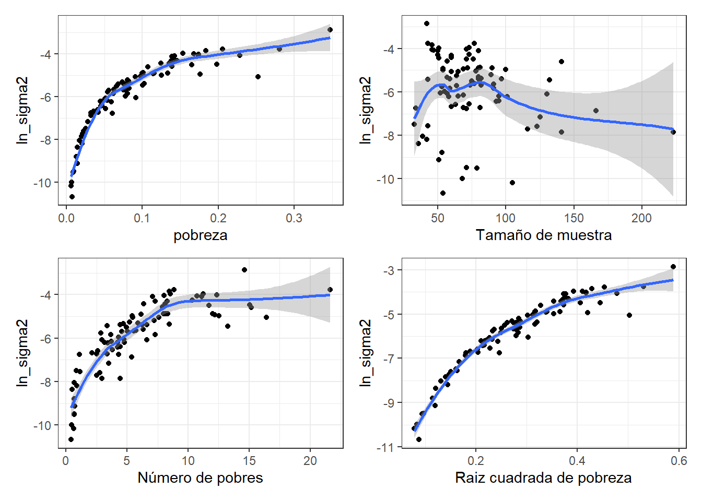
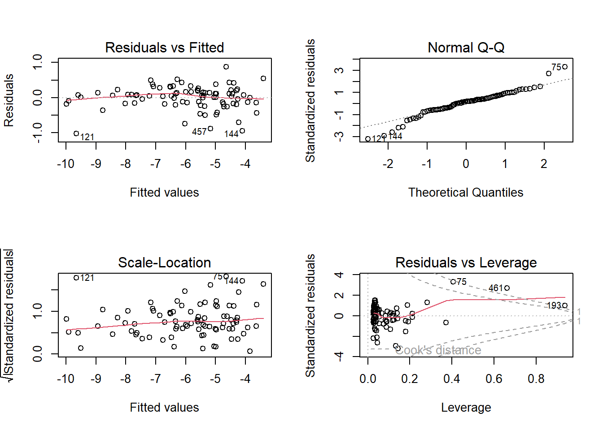
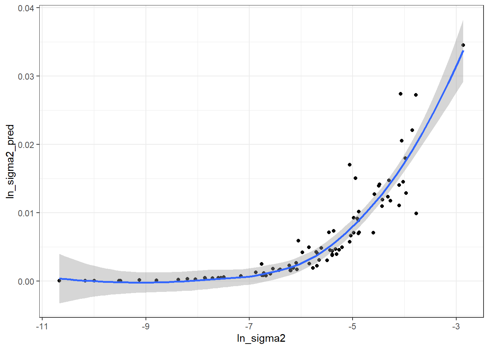
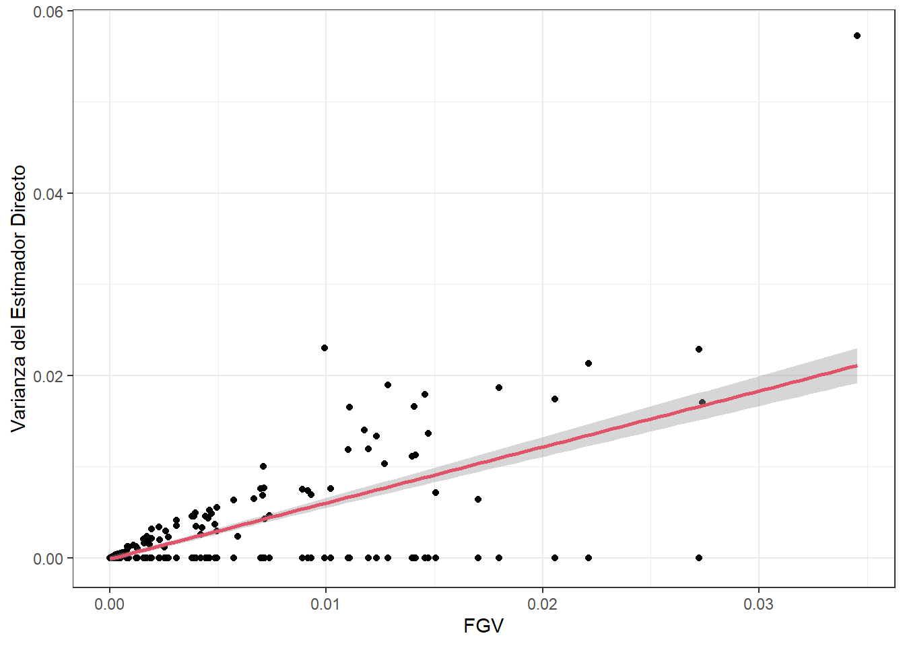

library(tidyverse)
library(magrittr)
source("0Funciones/0Source_FH.R")
encuesta <- readRDS("../Data/encuestaURY19N_Montevideo.rds") %>%
mutate(wkx = fep,
pobreza = ifelse(ingcorte < lp, 1 , 0))Fay Herriot en R y STAN
CEPAL - División de Estadísticas Sociales
Transformaciones FGV
Uno de los insumos más importantes en el modelo de áreas es la varianza del estimador directo, a nivel de dominio, la cual no puede calcularse de ningún modo. En correspondencia, este valor debe estimarse desde los datos recolectados en cada dominio. Sin embargo, en dominios en las que se cuenta con un tamaño de muestra muy pequeño, estas estimaciones no tendrán un buen comportamiento. Por ende, es muy útil utilizar un modelo de suavizamiento de las varianzas para eliminar el ruido y la volatilidad de estas estimaciones y extraer la verdadera señal del proceso
Hidiroglou (2019) afirma que \(E_{mp}\left(\hat{\theta}^{dir}_d\right)=\boldsymbol{x}_{d}\boldsymbol{\beta}\) y \(V_{mp}\left(\hat{\theta}^{dir}_d\right)=\sigma_{u}^2+\tilde{\psi}^2_{d}\), en donde el subíndice \(mp\) hace referencia a la inferencia doble que se debe tener en cuenta en este tipo de ajustes y define la medida de probabilidad conjunta entre el modelo y el diseño de muestreo.
\(m\) hace referencia a la medida de probabilidad inducida por el modelamiento y la inclusión de las covariables auxiliares (\(\boldsymbol{x}_{d}\)).
\(p\) hacer referencia a la medida de probabilidad inducida por el diseño de muestreo complejo que induce las estimaciones directas.
Además, \(\tilde{\psi}^2_{d} = E_m\left(\tilde{\psi}^2_{d}\right)\) es la varianza suavizada del estimador directo \(\hat{\theta}^{dir}_d\).
Datos de la encuesta
depto: Corresponde al código asignado a la segunda división administrativa del país.
segm: Corresponde al código asignado a la cuarta división administrativa del país.
lp y li lineas de pobreza y pobreza extrema definidas por CEPAL.
Factor de expansión por persona (fep)
| depto | segm | upm | estrato | ingcorte | lp | li | fep | wkx | pobreza |
|---|---|---|---|---|---|---|---|---|---|
| 1 | 106104 | 00157 | 04 | 52520.84 | 5912.62 | 2722.94 | 39 | 39 | 0 |
| 1 | 199099 | 03444 | 01 | 5723.00 | 5912.62 | 2722.94 | 49 | 49 | 1 |
| 1 | 123210 | 03099 | 04 | 32659.00 | 5912.62 | 2722.94 | 23 | 23 | 0 |
| 1 | 117109 | 01898 | 01 | 14666.60 | 5912.62 | 2722.94 | 45 | 45 | 0 |
| 1 | 121039 | 02739 | 04 | 50500.00 | 5912.62 | 2722.94 | 31 | 31 | 0 |
| 1 | 122230 | 03021 | 02 | 19700.00 | 5912.62 | 2722.94 | 41 | 41 | 0 |
| 1 | 111289 | 01090 | 01 | 12502.60 | 5912.62 | 2722.94 | 46 | 46 | 0 |
| 1 | 199040 | 03360 | 03 | 11500.00 | 5912.62 | 2722.94 | 40 | 40 | 0 |
| 1 | 118315 | 02371 | 05 | 88087.50 | 5912.62 | 2722.94 | 36 | 36 | 0 |
| 1 | 110103 | 00554 | 03 | 36862.67 | 5912.62 | 2722.94 | 43 | 43 | 0 |
Definir el diseño muestral
library(survey)
library(srvyr)
options(survey.lonely.psu = "adjust")
diseno <-
as_survey_design(
ids = upm,
weights = wkx,
strata = estrato,
nest = TRUE,
.data = encuesta
)Para la estimación directa de la proporción se emplea la función direct.supr, dando como resultado.
directoSegm <- direct.supr(design.base = diseno,
variable = pobreza,
group = segm,
upm = upm,
estrato = estrato)
directoSegm %>%
group_by(Flag) %>%
summarise(n = n()) %>%
arrange(n)| Flag | n |
|---|---|
| Incluir | 464 |
| Excluir | 467 |
Transformación Arcoseno, calculo del DEFF y varianza zd
base_sae <- directoSegm %>% filter(Flag != "Excluir") %>%
transmute(
segm = segm,
nd = n,
n_effec = n.eff,
pobreza = p,
pobreza_T = asin(sqrt(pobreza)),
vardir = ee ^ 2,
cv = CV,
var_zd = 1 / (4 * n_effec),
deff_segm = deff
)
base_sae1 <- base_sae [base_sae$vardir>0,]baseFGV <- base_sae1 %>%
select(segm, pobreza, nd, vardir) %>%
mutate(ln_sigma2 = log(vardir))Análisis gráfico
theme_set(theme_bw())
# pobreza vs Ln_sigma2 #
p1 <- ggplot(baseFGV, aes(x = pobreza, y = ln_sigma2)) +
geom_point() +
geom_smooth(method = "loess") +
xlab("pobreza")
# Tamaño de muestra vs Ln_sigma2 #
p2 <- ggplot(baseFGV, aes(x = nd, y = ln_sigma2)) +
geom_point() +
geom_smooth(method = "loess") +
xlab("Tamaño de muestra")
# Número de pobres vs Ln_sigma2 #
p3 <- ggplot(baseFGV,
aes(x = pobreza * nd, y = ln_sigma2)) +
geom_point() +
geom_smooth(method = "loess") +
xlab("Número de pobres")
# Raiz_pobreza vs Ln_sigma2 #
p4 <- ggplot(baseFGV,
aes(x = sqrt(pobreza), y = ln_sigma2)) +
geom_point() +
geom_smooth(method = "loess") +
xlab("Raiz cuadrada de pobreza")
library(patchwork)
(p1 | p2) / (p3 | p4)
Modelo para la varianza
FGV1 <- lm(ln_sigma2 ~ 1 + pobreza +
nd + I(nd ^ 2) + I(pobreza * nd) +
I(sqrt(pobreza)) + I(sqrt(nd)) +
I(sqrt(pobreza * nd)),
data = baseFGV)
summary(FGV1)
Call:
lm(formula = ln_sigma2 ~ 1 + pobreza + nd + I(nd^2) + I(pobreza *
nd) + I(sqrt(pobreza)) + I(sqrt(nd)) + I(sqrt(pobreza * nd)),
data = baseFGV)
Residuals:
Min 1Q Median 3Q Max
-1.02176 -0.17218 0.05764 0.18885 0.87865
Coefficients:
Estimate Std. Error t value Pr(>|t|)
(Intercept) -2.725e+00 2.673e+00 -1.020 0.311005
pobreza -1.039e+01 1.018e+01 -1.021 0.310616
nd 1.558e-01 5.080e-02 3.068 0.002966 **
I(nd^2) -2.114e-04 8.244e-05 -2.565 0.012246 *
I(pobreza * nd) -4.317e-01 1.557e-01 -2.773 0.006941 **
I(sqrt(pobreza)) 1.085e+01 1.174e+01 0.924 0.358222
I(sqrt(nd)) -2.378e+00 6.738e-01 -3.529 0.000704 ***
I(sqrt(pobreza * nd)) 3.160e+00 1.452e+00 2.177 0.032526 *
---
Signif. codes: 0 '***' 0.001 '**' 0.01 '*' 0.05 '.' 0.1 ' ' 1
Residual standard error: 0.3444 on 78 degrees of freedom
Multiple R-squared: 0.9588, Adjusted R-squared: 0.9552
F-statistic: 259.6 on 7 and 78 DF, p-value: < 2.2e-16Ponderador FGV
delta.hat = sum(baseFGV$vardir) /
sum(exp(fitted.values(FGV1)))
delta.hat[1] 1.039686Varianza suavizada
hat.sigma <- data.frame(segm = baseFGV$segm,
hat_var = delta.hat * exp(fitted.values(FGV1)))
baseFGV$ln_sigma2_pred <- hat.sigma$hat_varValidación del modelo para la FGV
par(mfrow = c(2, 2))
plot(FGV1)
Comparación entre varianza estimada con pronosticada por la FGV
ggplot(baseFGV,
aes(x = ln_sigma2, y = ln_sigma2_pred)) +
geom_point() +
geom_smooth(method = "loess")
Varianza suavizada
prediccion_ln_0 = predict(FGV1, newdata = base_sae %>%
filter(!is.na(pobreza)))
base_sae <- base_sae %>%
left_join(hat.sigma, by = "segm")
base_sae$hat_var[base_sae$vardir == 0 & !is.na(base_sae$vardir)] <-
delta.hat * exp(prediccion_ln_0)base_FH <- base_sae %>%
mutate(
deff_segm = ifelse(is.nan(deff_segm), 1,
deff_segm),
deff_FGV = ifelse(
vardir == 0 ,
1,
hat_var / (vardir / deff_segm)
),
# Criterio MDS para regularizar el DeffFGV
deff_FGV = ifelse(deff_FGV < 1, 1, deff_FGV),
n_eff_FGV = nd / deff_FGV
)
saveRDS(object = base_FH, "../Data/base_FH_2019.rds")Análisis gráfico
ggplot(base_FH %>% filter(!is.na(hat_var)) %>%
arrange(nd), aes(x = hat_var, y = vardir)) +
geom_point() +
geom_smooth(method = "lm", col = 2) +
labs(x = "FGV", y = "VarDirEst") +
ylab("Varianza del Estimador Directo")